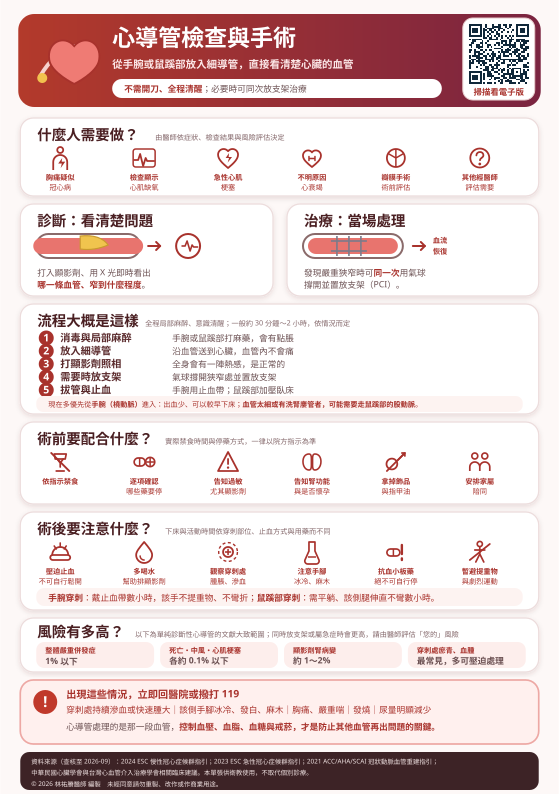

聽到「心導管」很多人第一個反應是「要開刀了嗎？」不是。它不需要開胸、不用全身麻醉，過程中你是清醒的，身上只會留下一個針孔大小的穿刺點。
這一頁說明什麼人需要做、做了能得到什麼、當天會發生什麼事，以及回家之後要注意什麼。
本頁有表格，在手機上若看不到完整欄位，請用手指在表格區域左右滑動即可看到全部內容。
心導管不是健康檢查項目，不會因為「想看看血管」就安排。醫師會先用非侵入性的方式評估，當結果顯示風險夠高、或症狀用藥物控制不住時，才會建議做。
大原則是先做非侵入性檢查，再決定要不要做侵入性的。如果運動心電圖或心肌灌注掃描顯示缺氧範圍大、風險高，或是吃了藥症狀還是控制不住，心導管的好處就明顯大於風險。反過來，症狀輕、檢查風險低的人，通常會先用藥物與生活控制。
急性心肌梗塞是例外——這時不會慢慢排檢查，而是盡快送進導管室打通血管，因為每一分鐘都有心肌在壞死。
兩個目的：看清楚，以及提供合適的治療方式。
不一定。做完檢查後可能有三種結果：
所以術前簽同意書時，通常會一併簽署檢查與可能的治療，讓醫師能在必要時當場處理，不用叫醒你或另外排一次。
導管要從動脈進去，主要有兩條路：手腕的橈動脈與鼠蹊部的股動脈。現在多數情況會優先選擇手腕。
| 比較 | 手腕（橈動脈） | 鼠蹊部（股動脈） |
|---|---|---|
| 出血風險 | 明顯較低——血管淺、好壓迫 | 較高，因為血管較深 |
| 術後活動 | 通常可以馬上坐起來、下床走動 | 需要平躺、該側腿伸直不彎數小時 |
| 止血方式 | 戴止血帶數小時，逐步放鬆 | 人工加壓或用止血器材，再壓沙袋 |
| 什麼時候仍會走鼠蹊部 | 手腕血管太細或痙攣、曾做過繞道手術需看特定血管、需要較粗的導管（例如某些複雜的介入或放置輔助裝置）、或手臂有洗腎用的動靜脈廔管 | |
由醫師依血管條件、要做什麼、以及當下的情況決定，有時候甚至會在術中改變路徑。這不是「比較好」或「比較差」的問題，而是哪一條最安全、最能完成需要做的事。
如果您某一隻手有洗腎用的動靜脈廔管，或曾經做過乳癌手術清除腋下淋巴結，請務必事先告知。
以下為一般原則。實際的禁食時間與停藥方式，一律以您就診醫院的指示為準。
| 項目 | 為什麼重要 |
|---|---|
| 所有正在吃的藥 | 包含抗凝血藥、抗血小板藥、糖尿病藥與保健食品、中藥。有些要停、有些反而不能停，必須逐項確認 |
| 藥物與顯影劑過敏史 | 曾對顯影劑起疹子、喘、休克，一定要講。醫師可以事先給藥預防 |
| 腎功能不好 | 顯影劑由腎臟排出。腎功能不佳者術前會安排點滴水化並減少顯影劑用量 |
| 懷孕或可能懷孕 | 過程需要 X 光 |
| 洗腎用的動靜脈廔管、乳癌手術病史 | 影響從哪一隻手進去 |
| 曾做過心導管或繞道手術 | 影響路徑選擇與操作方式 |
這是最常見的誤解。顯影劑過敏與海鮮或碘沒有因果關係——過去認為有關的說法，已被研究否定。海鮮過敏的人不會因此特別容易對顯影劑過敏。
真正需要警覺的是：過去打顯影劑本身曾經有過不良反應，或本身有嚴重氣喘、多重藥物過敏。請照實說明您實際發生過什麼（起疹子？喘？血壓掉？），醫師會據此判斷要不要事先給藥預防。
心導管是成熟且安全的處置，但它仍是侵入性的，有風險。整體而言，單純的診斷性心導管，嚴重併發症的機率很低；若同時做支架治療，風險會略高一些。
| 項目 | 說明 |
|---|---|
| 穿刺處瘀青、血腫 | 最常見。多數壓迫即可改善，瘀青會慢慢退掉 |
| 血管併發症 | 假性動脈瘤、動靜脈廔管；鼠蹊部路徑較常見，必要時需加壓或手術處理 |
| 顯影劑不良反應 | 從起疹子、搔癢到極少數的嚴重過敏。術中全程監測，可立即處理 |
| 顯影劑腎病變 | 腎功能不好、糖尿病、脫水者風險較高。術前會給點滴水化、術後鼓勵多喝水 |
| 心律不整 | 導管刺激心臟時可能出現，多為短暫 |
| 嚴重併發症 | 心肌梗塞、中風、血管破裂、出血需輸血——都屬罕見，但簽同意書時會說明 |
| 輻射暴露 | 劑量受嚴格控制；複雜或時間長的個案劑量較高，極少數可能出現皮膚反應 |
這些是臨床研究文獻上的大致範圍，不是您個人的數字。最重要的差別有三個：只做檢查還是同時放支架、是擇期還是急症、以及您本身的年齡、腎功能與心臟功能。急性心肌梗塞或休克狀態下的數字，會比下表高出許多。
| 項目 | 單純診斷性心導管 | 同時放支架（PCI） |
|---|---|---|
| 整體嚴重併發症 | 約 1% 以下 | 略高於診斷性檢查 |
| 死亡 | 約 0.1% 以下（約每 1,000～2,000 人 1 位） | 擇期約 0.5～1%；急性心肌梗塞或休克時明顯更高 |
| 中風 | 約 0.1% 以下 | 約 0.2% |
| 手術相關心肌損傷 | 約 0.05% | 依判定標準不同，可達數個百分點 |
| 嚴重心律不整 | 約 0.4% | 相近 |
| 穿刺處血管併發症 | 約 0.2～2% 鼠蹊部高於手腕 | 約 1～3% |
| 出血需要輸血 | 約 0.3～1% | 較高 |
| 顯影劑輕微反應（疹子、癢、噁心） | 約 1～3% | 相近 |
| 顯影劑嚴重過敏 | 約 0.01～0.1%（罕見） | 相近 |
| 顯影劑腎病變 | 整體約 1～2%；腎功能不好或糖尿病者可達 10～20% 以上 | 相近或略高 |
| 需要緊急繞道手術 | 極罕見 | 低於 0.5% |
| 橈動脈阻塞（走手腕時） | 約 1～5%，多數沒有症狀，因為手部有另一條尺動脈供血 | 相近 |
單純的診斷性心導管，約每 1,000 個人裡，會有 1 位以下發生死亡這類最嚴重的併發症；最常遇到的其實是穿刺處的瘀青與血腫，而這一項多半壓迫就能處理。
另一邊要一起衡量的是「不做」的風險：如果血管真的有嚴重狹窄卻沒有被發現、沒有處理，發生心肌梗塞的機會遠高於上面任何一個數字。這就是醫師建議做的理由。
上面是一般的範圍。您個人的風險，取決於年齡、腎功能、心臟功能、血管狀況與是否為急症。術前說明時可以直接問：「以我的狀況，做這個的風險大概多高？不做的風險又是多少？」
看到狹窄之後，接下來要決定三件事：這個狹窄需不需要處理、要放什麼樣的支架，以及血管硬到放不進去時該怎麼辦。
| 狹窄程度 | 一般怎麼判斷 |
|---|---|
| 嚴重狹窄（一般 > 70%；左主幹 > 50%） | 加上有相符的症狀或缺氧證據時，多半建議處理 |
| 中等狹窄（約 40～70%） | 光看影像不準。醫師可能用導絲測量冠狀動脈血流儲備分數（FFR／iFR），確認這個狹窄有沒有真的造成缺氧再決定。很多情況會發現不需要放支架 |
| 多條血管或左主幹嚴重病變 | 尤其合併糖尿病或心臟功能不好時，可能建議繞道手術反而更適合，會由心臟團隊共同討論 |
研究已經很清楚：對沒有造成缺氧的狹窄放支架，並不會減少心肌梗塞或死亡，卻要多承擔手術風險與長期服藥。這種情況用藥物與生活控制才是正解。
| 種類 | 特點 | 現在的做法 |
|---|---|---|
| 塗藥支架（DES） | 支架表面帶藥，抑制血管內皮過度增生，大幅降低再狹窄 | 目前臨床上幾乎全面使用 |
| 傳統金屬裸支架（BMS） | 沒有藥物塗層，再狹窄率明顯較高 | 現行指引已不再建議常規使用；健保仍全額給付，少數特殊情況才會選用 |
過去會認為「怕出血的人用裸支架、可以早點停藥」。但新一代塗藥支架搭配較短療程的抗血小板藥已被證實安全，所以即使是高出血風險的病人，現行做法仍是選擇塗藥支架。
這是台灣病人一定會遇到的一題，請先了解健保的規則：
所以這不只是醫療決定，也牽涉到費用。如果醫師建議使用塗藥支架，請在術前問清楚：預計放幾支、每支差額多少、總共要付多少。也可以到衛生福利部中央健康保險署的自費醫材比價網查詢同一品項在各院所的收費。
需要提醒的是：各廠牌的塗藥支架並沒有絕對的優劣，醫師會依病灶的位置、長度、血管管徑與彎曲程度來選用合適的型號，不是越貴越好。有任何考量（包含經濟上的），都可以直接和醫師討論。
| 項目 | 大約機率 |
|---|---|
| 新一代塗藥支架，1 年內需要再處理同一段血管 | 約 2～5% |
| 之後每年再增加 | 約每年 1～2% |
| 支架內再狹窄（含無症狀、影像上發現） | 整體約占所有心導管介入的 10% 左右 |
| 傳統金屬裸支架 | 再狹窄率明顯高出許多，這正是它被取代的原因 |
| 哪些人機率較高 | 糖尿病、血管很細、病灶很長、分叉處、嚴重鈣化、支架沒有完全撐開，以及繼續抽菸、血脂血糖沒控制好的人 |
再狹窄率高低，有一半掌握在您自己手上。按時吃抗血小板藥與 statin、把血壓血糖控制好、戒菸，是降低再狹窄與新病灶最有效的方法。支架只是把那一段撐開，它不會阻止其他地方繼續長斑塊。
有些血管壁的鈣化像水泥一樣硬，氣球撐不開、支架推不進去，或是勉強放進去卻沒有完全貼壁——而支架沒撐開，正是日後再狹窄與支架內血栓的重要原因。這時就需要先把鈣化「處理開」。
| 器械 | 原理 | 什麼時候用 |
|---|---|---|
| 旋磨術 （鑽石研磨頭，Rotational atherectomy） | 前端鑲鑽石顆粒的磨頭高速旋轉，把鈣化磨成極細的粉末隨血流帶走 | 鈣化非常嚴重、導管或氣球連通過都有困難時 |
| 軌道式旋磨術 （Orbital atherectomy） | 偏心的鑽石研磨頭以軌道方式旋轉，可磨出較大的管徑 | 與旋磨術類似的情境 |
| 血管內震波碎鈣術 （IVL，Intravascular lithotripsy） | 氣球內發出聲波震動把鈣化震裂，原理類似泌尿科的體外震波碎石 | 鈣化在血管壁深層、或希望減少磨除相關風險時 |
| 切割／刻痕氣球 | 氣球上有刀片或鋼絲，把鈣化環切開再撐 | 中度鈣化，或支架內再狹窄的處理 |
2024 至 2025 年發表的 ECLIPSE 大型隨機試驗（約 2,000 位嚴重鈣化病灶的病人）發現：在放支架前「常規」先做軌道式旋磨，並沒有比單純用氣球做好準備得到更好的結果——支架撐開的面積相近，一年的血管事件也沒有差異（11.5% 對 10.0%）。
所以這些器械不是越先進越好，也不是每個鈣化病灶都要用，而是在氣球真的撐不開的時候才派上用場。同一個研究也發現，有使用血管內影像（IVUS 或 OCT）輔助的病人結果比較好，這支持在複雜病灶使用影像導引。
磨除或震碎鈣化本身有風險，包括血管剝離、穿孔、暫時性血流變慢、磨頭卡住等。所以醫師會權衡：不處理鈣化可能導致支架撐不開，而處理鈣化本身也有風險。這是術中依影像與當下情況做的判斷，術前不一定能完全預知。
如果術前評估可能需要用到這些器械，醫療團隊會另外說明，部分屬於自費項目，請一併問清楚。
| 時間點 | 可能的感覺 | 正常嗎 |
|---|---|---|
| 打局部麻藥 | 短暫刺痛、脹 | 正常，幾秒鐘 |
| 導管在血管裡移動 | 幾乎沒有感覺 | 血管內沒有痛覺神經 |
| 打顯影劑 | 全身一陣熱、臉發燙、像想小便 | 非常常見，數秒就退 |
| 氣球撐開血管 | 短暫胸悶或胸痛 | 預期中，撐開後緩解。但要說出來 |
| 拔管止血 | 壓迫處脹、痠 | 正常，會持續一段時間 |
| 持續胸痛、喘、冒冷汗 | — | 不正常，立刻告訴醫護 |
| 手腕（橈動脈） | 鼠蹊部（股動脈） | |
|---|---|---|
| 止血 | 戴止血帶數小時，護理人員會依時間逐步放鬆 | 人工加壓或止血器材，之後可能壓沙袋 |
| 姿勢 | 可以坐起來；該手不提重物、不彎折、不撐床 | 平躺、該側腿伸直不彎，不可自行抬高床頭 |
| 下床 | 通常較早，依醫囑 | 需要臥床數小時，依止血方式與用藥而不同 |
| 絕對不可以 | 自行鬆開止血帶或拿掉壓迫——這是造成術後大出血最常見的原因 | |
不要先自己觀察一下。這幾項都是越早處理越好。
顯影劑要靠腎臟排掉。若醫師沒有特別限制水分（例如心衰竭或洗腎病人會有個別指示），術後應該多喝水幫助排出，並注意尿量有沒有明顯變少。護理人員可能會請您記錄。
雙重抗血小板治療（通常是阿斯匹靈＋另一種）絕對不可以自行停用。支架在血管內皮長好之前，停藥可能形成支架內血栓，這是會致命的急症。
要拔牙、做胃鏡大腸鏡、或任何手術前，請先回心臟科問過，由醫師決定能不能停、停幾天。也請主動告訴每一位看診的醫師：「我有放支架，正在吃抗血小板藥。」
建議隨身攜帶支架識別卡（若醫院有提供），並讓家人知道放在哪裡。
若胸痛持續超過 15～20 分鐘不緩解，請直接撥 119，不要自己開車。
一般是局部麻醉，你全程清醒。只有在特殊情況（例如無法配合、或同時做複雜的治療）才會加上鎮靜或全身麻醉。清醒是有好處的——你可以隨時反映不舒服，醫師也能請你配合呼吸。
沒有一個適用所有人的天數。單純的診斷性心導管，有些情況當天或隔天就能出院；放了支架或屬於急症的人則需要較長觀察。請以您的醫療團隊安排為準。
不會影響機場安檢，支架太小不會觸發警報。現在的冠狀動脈支架絕大多數可以做核磁共振（MRI），但檢查前仍請主動告知並出示相關資料，由放射科評估。
可以。需要的時候仍能再做，也能在原來的支架處或其他血管進行處理。
對腎功能正常的人影響很小。腎功能不好、糖尿病、脫水或高齡的人風險較高，所以術前會評估腎功能、給點滴水化、盡量減少顯影劑用量，術後鼓勵多喝水並追蹤腎功能。
依穿刺部位、有沒有放支架、工作性質而不同。一般約一週內避免提重物與劇烈運動；開車與上班的時間請在出院前直接問醫師。走鼠蹊部的人通常需要多休息幾天。
依院方指示。一般會建議先以擦澡為主，等傷口穩定後再淋浴；不要泡澡、不要泡溫泉或游泳，避免傷口浸水感染。搓洗時避開穿刺處。
本頁內容依下列臨床指引與建議編寫，並針對台灣一般民眾的用語與就醫情境改寫（查核至 2026 年 9 月）：
本頁為一般衛教資訊，不能取代醫師對個別病情、術式與費用的說明。禁食時間、停藥方式、臥床與下床時間、住院天數，各醫院與每位病人都不同，請以您就診醫院提供的指示為準。本頁不提供任何藥物劑量建議。
若出現胸痛持續不緩解、嚴重呼吸困難、穿刺處大量出血或肢體冰冷發白，請立即就醫或撥打 119。
